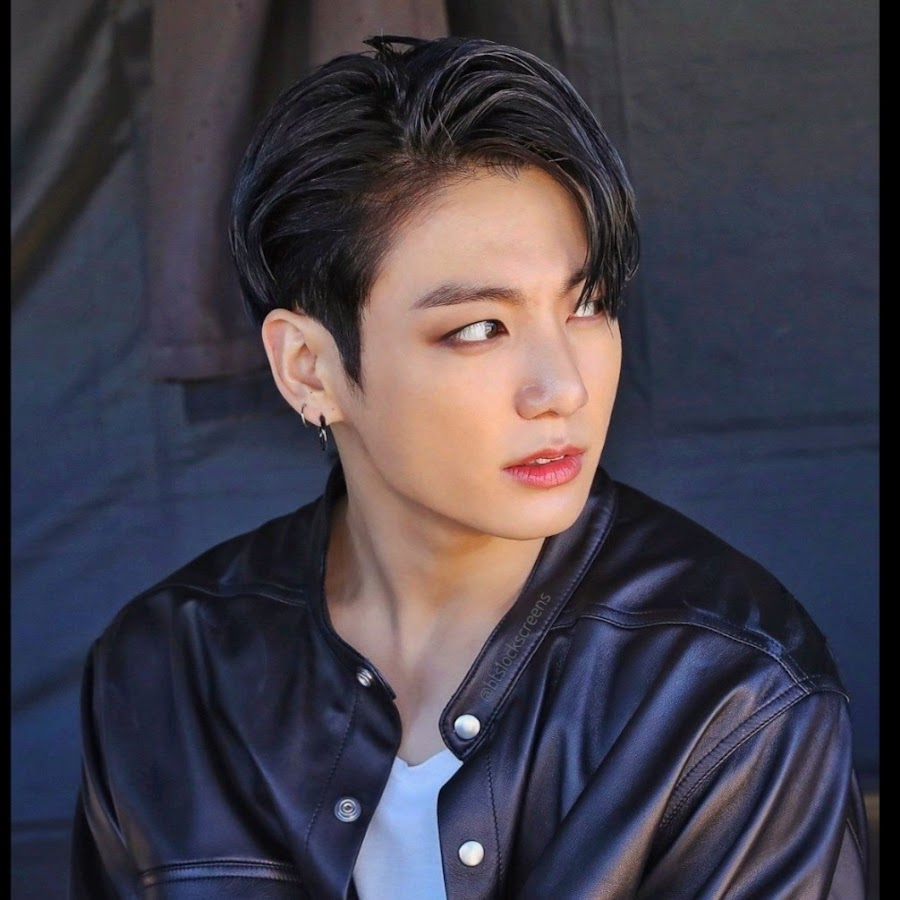

| EQUIPO | PARTIDOS | PUNTOS | ESCUDO |
|---|---|---|---|
| Colombia | 5 | 15 |
|
| Brasil | 4 | 12 |
|
| Argentina | 3 | 9 |
|
| Venezuela | 2 | 6 |
|
| Eliminatoria al mundial | |||
| INTEGRANTE | EDAD | POSICIÓN | FOTO | |||
|---|---|---|---|---|---|---|
| Kim Namjoon (RM) | 28 años | Rapero, líder, bailarín | ||||
| Kim Seokjin (Jin) | 30 años | Vocalista, visual, bailarín | ||||
| Min Yoongi (Suga) | 30 años | Rapero, compositor, productor, bailarín | ||||
| Jung Hoseok (J-Hope) | 29 años | Bailarín principal, rapero, vocalista secundario | ||||
| Park Jimin (Jimin) | 27 años | Vocalista, bailarín |

|
|||
| Kim Taehyung (V) | 27 años | Vocalista, visual, bailarín | ||||
| Jeon Jungkook (Jungkook) | 26 años | Vocalista principal, bailarín, compositor, rapero secundario |  | |||
|
Curiosidades= BTS es una banda surcoreana que debutó el 13 de junio del 2013.
Actualmente cuentan con 30 álbumes y son una de las bandas más reconocidas mundialmente. |
||||||
| Portada | Álbum | Año | Descripción |
|---|---|---|---|
| Dark and Wild | 2014 | Contiene 14 canciones, con "Danger" como su sencillo principal. | |
| Wings | 2016 | Contiene 15 canciones, con "Blood, sweat and tears" como su sencillo principal. | |
| Love yourself: Tear | 2018 | Contiene 11 canciones, destaca "Fake love". | |
| Love yourself: Her | 2018 | Contiene 9 canciones, destaca "Serendipity". | |
| Love yoursel: Answer | 2018 | Contiene 25 canciones, incluyendo a Tear y Her junto con 7 canciones nuevas. | |
| Love yourself: Wonder | 2018 | De wonder solo hace parte un video músical que conecta los tres anteriores. | |
| Map of the soul: 7 | 2020 | Cuenta con 20 canciones, con "ON" como su sencillo principal. |